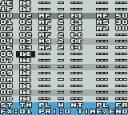

©2000-2001 Aleksi Eeben (email: aleksi@cncd.fi)
http://www.cncd.fi/aeeben
FX Hammer Editor v1.1
Compatibility
FX Hammer Editor Buttons
Sound FX Parameters

New features in version 1.1:
Sound FX knee point (Select + Down to set/remove) - When the sound reaches this step its priority is changed to zero so that any new sound FX requested will override it. Typically the knee point would be set right after the 'main body' of the sound FX and before any panning echoes or other sustaining 'tail' (which are less important).
Trig sound at half speed (Start + Up) - Very useful in fine adjusting more complex sounds.
Compatibility
It is recommended to run the editor on the actual Game Boy Color hardware only. The editor should also work fine on the old monochrome Game Boy and Game Boy Pocket.
If you want to run the editor on an emulator you should use (V)GBC (by Rusty Wagner) or No$gmb(v2.5). A third option would be REW.
|
Up/Down/Left/Right |
Scroll / Move cursor |
|
A + Left/Right |
Edit parameter under cursor (Pan / Note / Frequency Div) |
|
A + Up/Down |
Edit other parameter (Level / Pulse Width / Note in octave leaps / Frequency) |
|
A + B |
Clear one step on the current channel |
|
B + Up/Down |
Go to next/previous Sound FX (also stops any Sound FX playing) |
|
B + Left/Right |
Change Priority of current Sound FX ($0 - $f, higher value = higher priority) |
|
Start |
Play Sound FX |
|
Down + Start |
Play Sound FX and scroll while playing (New feature: Up + Start to play at half speed) |
|
Select + Left |
Jump to start of Sound FX |
|
Select + Right |
Jump to middle of Sound FX (step $10) |
|
Select + Up |
Copy Sound FX to buffer |
|
Select + Start |
Copy Sound FX from buffer |
|
A + Select |
Insert step (on both channels) |
|
B + Select |
Delete step (on both channels) |
|
Select + Down |
Set Sound FX knee point (shown as a '>' symbol) |
Sound FX data is read from top to bottom, from step $00 to $1f (much like the sound data in Carillon Editor).
|
TIME/END |
The number of frames ($01 to $7F) to wait before proceeding with the next step in the sound. $01 - Used for sliding frequency |
|
CH2/PLEV |
Pan (L, M, R) and Level ($0-$F) for Channel 2 Carillon Player doesn't use the built-in envelope function in CGB. Instead there is a fully programmable envelope which allows an individual volume setting for each step in the sound. |
|
CH2/PWDT
|
0 - Pulse width 12.5% (sharp tone) |
|
CH2/NOTE |
Note played this step: C-0 to B-5 |
|
CH4/PLEV |
Pan (L, M, R) and Level ($0-$F) for Channel 4 (Noise) |
|
CH4/FRQD |
Noise Frequency (the actual value written directly to the noise frequency register) The high nybble selects noise frequency:
The lower nybble selects noise type: $0 - "White" noise Note: Noise emulation is very inaccurate in all software emulators |
Each Sound FX Bank (one ROM bank) holds 60 sounds and the FX Hammer code. Use your flash card specific tools to transfer Sound FX data to/from your computer. If you want to start from scratch, just clear the entire SRAM on the card.
The card SRAM is updated (ie. the Sound FX data is saved) every time you trig a sound in the editor.
SRAM files are 32KB of which the first half of 16KB is the Sound FX Bank image. (You can easily trim the files by using the Slice SRAM File -option in Carillon Editor Utility. The resulting *.bin-file is the Sound FX Bank and the other *.sam file can be discarded.)